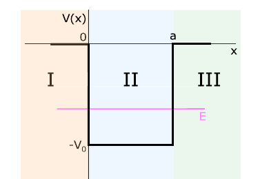

The finite well is divided into three regions. The bound-state range \(-V_0<E<0\) gives exponential wave functions outside the well and oscillatory wave functions inside it. The boundary conditions at \(x=0\) and \(x=a\) connect these three solutions.
Finite well and its regions

Figure 4.3: finite potential well with regions I, II, and III. Bound states have \(-V_0<E<0\).
The four continuity conditions relate \(A,C,D,G\) and leave a condition on \(\tilde{k}\). Since \(\tilde{k}^{,2}=k_0^2-k^2\), determining \(\tilde{k}\) determines the allowed bound-state energies.
Exercise-ready boundary
This page supports exercises on the finite-well potential, the three regional wave functions, and the four boundary conditions.
Use from this page: the potential, energy range, regional equations, and continuity conditions.
Keep in the book: the complete algebra leading from the four conditions to the transcendental equations.
Good exercise balance: identify the correct region before applying a boundary condition.
Practice anchors
Use these anchors to design compact exercises from the finite-well setup.
Focus: regional wave functions and matching at \(x=0\) and \(x=a\).
Conceptual check: explain why the external solutions must decay.
Source note: Original auxiliary summary based on Chapter 4 of Mario Reis, Quantum Mechanics, Elsevier, 2026. Consult the original book for complete derivations and exercises.